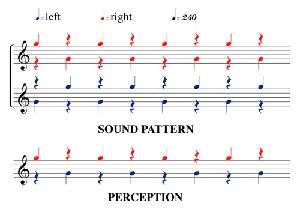

Diana Deutsch's 'Octave Illusion'
Click the button at the bottom to play a web audio version of the octave illusion.The following text and images have been taken from Diana Deutsch's Website':
"The Octave Illusion was discovered by Deutsch in 1973, first reported at a meeting of the Acoustical Society of America (Deutsch 1974)1 and first published in Deutsch, Nature (1974)2.
"Figure 1 shows the pattern that produces the Octave Illusion. Two tones that are spaced an octave apart are alternated repeatedly at a rate of four per second. The identical sequence is played over headphones to both ears simultaneously; however when the right ear receives the high tone the left ear receives the low tone; and vice versa. The tones are sine waves of constant amplitude, and follow each other without amplitude drops at the transitions. So in fact the listener is presented with a single, continuous two-tone chord, with the ear of input for each component switching repeatedly."

The Octave Illusion needs to be heard through stereo headphones. Make sure that the loudspeakers on your sound system are turned off, and that the left and right channels are balanced for loudness. Then readjust the settings on your amplifier so that the sounds, as heard through the headphones, are somewhat on the soft side.
Now listen to this pattern. If you hear a higher tone in one ear and a lower tone in the other ear, decide which ear is hearing the higher tone. Then reverse the earphone positions and listen to the pattern again. Decide again which ear is hearing the higher tone.